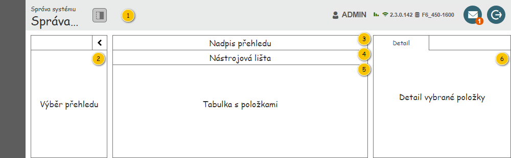
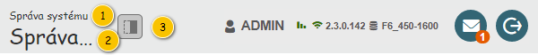
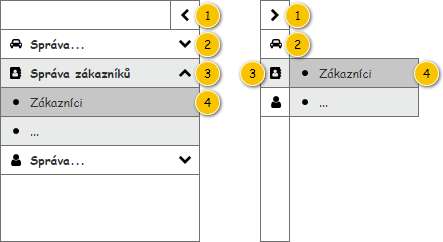

Uživatelské rozhraní poskytuje přístup k zobrazení přehledu jednotlivých seznamů a číselníků. Dále umožňuje využití nástrojů pro filtrování a řazení.
Jedná se o obecnou strukturu pro jednotlivé přehledy. Samotná struktura bude tedy popsána zde, její použití pak na jednotlivých stránkách konkrétních přehledů.

| Callout | Skupina |
|---|---|
| 1 | Nadpis přehledu |
| 2 | Výběr přehledu |
| 3 | Nadpis tabulky přehledu |
| 4 | Nástrojová lišta tabulky přehledu |
| 5 | Tabulka s položkami přehledu |
| 6 | Detail vybrané položky |

| Callout | Komponenta | Nadpis | Typ komponenty | Příklad hodnoty | Hodnota | Výchozí hodnota | Formát | Zpřístupněná | Viditelná | Chování | Validace | Poznámka |
|---|---|---|---|---|---|---|---|---|---|---|---|---|
| 1 | Nadpis modulu | – | Label | – | Správa systému | – | – | – | – | – | – | – |
| 2 | Nadpis skupiny přehled | – | Label | Správa zákazníků | Viz Struktura přehledu – sloupec Skupina. Hodnota je získána dle zobrazeného přehledu – podle skupiny přehledu, ve kterém je přehled obsažen. | – | – | – | – | – | – | – |
| 3 | Zobrazení/skrytí detailu | – | ToggleButton | – | – | – | – | Vždy | Pokud zobrazený přehled používá panel s detailem. | Pokud je tlačítko stisknuto, je zobrazen detail. Pokud tlačítko stisknuto není, je detail skrytý. | – | – |

| Callout | Komponenta |
|---|---|
| 1 | Zobrazení/skrytí menu |
| 2 | Tlačítko zabalené skupiny |
| 3 | Tlačítko rozbalené skupiny |
| 4 | Tlačítko zobrazeného přehledu |
Poznámka: Přeškrtnuté položky zatím nebudou implementovány.
| Callout | Komponenta | Nadpis | Typ komponenty | Příklad hodnoty | Hodnota | Výchozí hodnota | Formát | Zpřístupněná | Viditelná | Chování | Validace | Poznámka |
|---|---|---|---|---|---|---|---|---|---|---|---|---|
| 1 | Nadpis zobrazeného přehledu | – | Label | Zákazníci | Viz Struktura přehledu – sloupec Přehled. Hodnota je získána ze zobrazeného přehledu. | – | – | – | Vždy | – | – | – |
Nástrojové lišty jsou popsánu samostatně u jednotlivých přehledů.
Tabulky jsou popsánu samostatně u jednotlivých přehledů.
Detail vybrané položky je popsán samostatně u jednotlivých přehledů.
Grafický návrh vychází z FLWW2 – Správa systému.